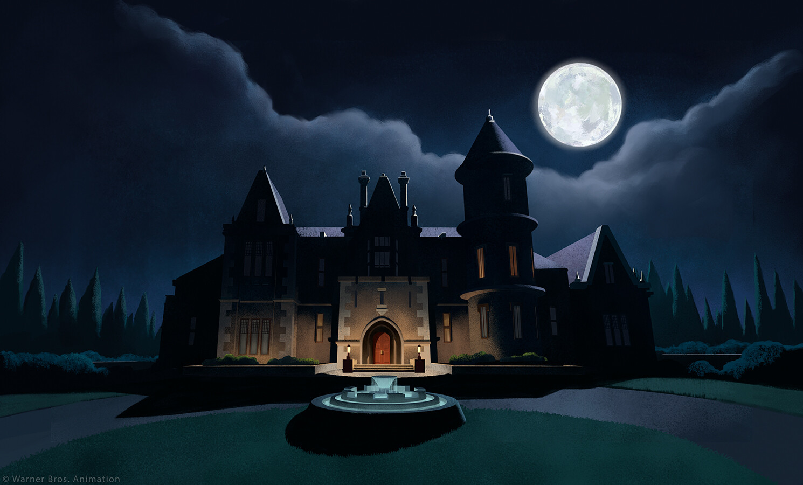
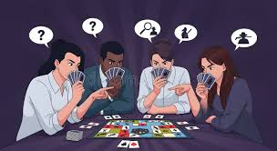
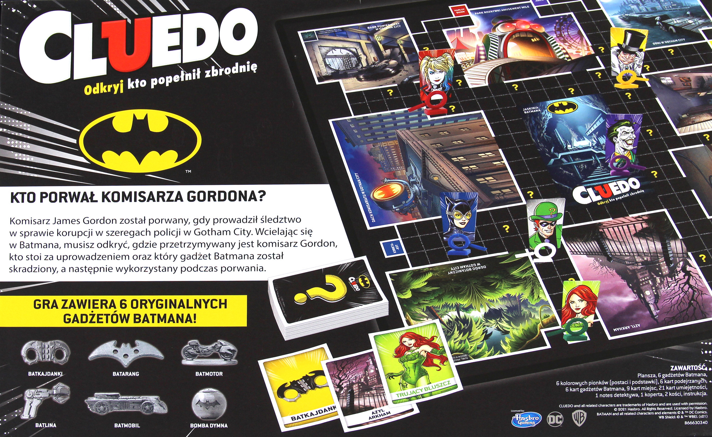

La historia de Cluedo
Un misterioso asesinato en una mansión llena de secretos.



El crimen en la mansión
En una lujosa mansión ocurre un asesinato inesperado. Nadie puede salir hasta que se descubra al culpable, el arma utilizada y la habitación donde ocurrió el crimen.
Los sospechosos
Cada jugador encarna a un personaje con acceso a distintas zonas de la mansión, todos con motivos y secretos ocultos.

Resolver el misterio
A través de la deducción y la observación, los jugadores deberán reconstruir los hechos para descubrir la verdad antes que los demás.